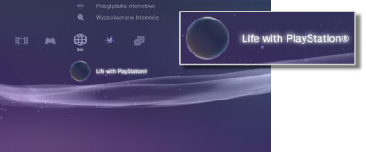

Sieć > Life with PlayStation®
Life with PlayStation®
Usługa Life with PlayStation® daje dostęp do dynamicznej zawartości w Internecie podzielonej na unikalne kanały, które można przeglądać według czasu i lokalizacji. Wybierając kanał, można uzyskać dostęp do różnych typów zawartości.
Korzystanie z usługi Life with PlayStation® oznacza automatyczne uczestnictwo w projekcie Folding@home™, czyli w rozproszonym projekcie obliczeniowym prowadzonym przez Uniwersytet Stanforda.
Rozpoczęcie korzystania z usługi Life with PlayStation®
Aby korzystać z usługi Life with PlayStation®, należy najpierw pobrać i zainstalować aplikację Life with PlayStation®. Wybierz opcję (Life with PlayStation®) w kategorii  (Sieć), aby pobrać aplikację. Postępuj zgodnie z instrukcjami wyświetlanymi na ekranie, aby dokończyć instalację.
(Sieć), aby pobrać aplikację. Postępuj zgodnie z instrukcjami wyświetlanymi na ekranie, aby dokończyć instalację.

Wskazówki
- Do zainstalowania aplikacji Life with PlayStation® wymagane jest co najmniej 500 MB wolnej przestrzeni na dysku twardym konsoli PS3™.
- Jeśli zostanie wyświetlona ikona
 (Folding@home™), należy najpierw zaktualizować aplikację Folding@home™, a następnie uaktualnić ją do aplikacji Life with PlayStation®. Wybierz opcję (Folding@home™) w kategorii (Sieć), a następnie postępuj zgodnie z instrukcjami wyświetlanymi na ekranie, aby uaktualnić aplikację Folding@home™. Następnie ponownie wybierz opcję (Folding@home™) w kategorii (Sieć) i postępuj zgodnie z instrukcjami wyświetlanymi na ekranie, aby uaktualnić do aplikacji Folding@home™.
(Folding@home™), należy najpierw zaktualizować aplikację Folding@home™, a następnie uaktualnić ją do aplikacji Life with PlayStation®. Wybierz opcję (Folding@home™) w kategorii (Sieć), a następnie postępuj zgodnie z instrukcjami wyświetlanymi na ekranie, aby uaktualnić aplikację Folding@home™. Następnie ponownie wybierz opcję (Folding@home™) w kategorii (Sieć) i postępuj zgodnie z instrukcjami wyświetlanymi na ekranie, aby uaktualnić do aplikacji Folding@home™.
Kończenie pracy aplikacji Life with PlayStation®
Aby zamknąć aplikację Life with PlayStation®, naciśnij przycisk PS na kontrolerze bezprzewodowym, a następnie wybierz opcję  (Zakończ) w obszarze (Sieć).
(Zakończ) w obszarze (Sieć).
Ustawianie automatycznego uruchamiania
Aplikacja PlayStation® jest uruchamiana automatycznie, jeśli konsola PS3™ jest bezczynna przez określony czas. Wybierz opcję (Life with PlayStation®) w kategorii (Sieć), naciśnij przycisk  , a następnie wybierz opcję [Autouruchamianie] z menu opcji.
, a następnie wybierz opcję [Autouruchamianie] z menu opcji.
| Wył. | Aplikacja Life with PlayStation® nie będzie uruchamiana automatycznie. |
|---|---|
| Po 10 minutach | Uruchamianie aplikacji Life with PlayStation® po 10 minutach. |
| Po 20 minutach | Uruchamianie aplikacji Life with PlayStation® po 20 minutach. |
| Po 30 minutach | Uruchamianie aplikacji Life with PlayStation® po 30 minutach. |
Wskazówka
Opcja [Autouruchamianie] jest wyłączona, gdy konsola PS3™ nie jest podłączona do Internetu.
Usuwanie aplikacji Life with PlayStation®
Aplikację Life with PlayStation® można usunąć z dysku twardego. Wybierz opcję (Life with PlayStation®) w kategorii (Sieć), naciśnij przycisk , a następnie wybierz opcję [Usuń] z menu opcji.
Wskazówka
Nawet jeśli program zostanie usunięty, ikona (Life with PlayStation®) nadal będzie wyświetlana w menu XMB™.
Po wybraniu tej ikony aplikacja Life with PlayStation® zostanie pobrana ponownie.